පරිශීලක අත්පොත
විකුණුම් (POS) · ගනුදෙනුකරු ණය · ලාභ වාර්තා · ස්වයංක්රීය උපස්ථ (Backup)
Powered by ECODES IT SOLUTIONS · https://ecodes.lk
%APPDATA%\Easy POS\data\pos-data.json. වැඩසටහන Uninstall කළත් දත්ත මැකී නොයයි.පළමු වරට ඇතුළු වන විට Username: admin සහ Password: admin භාවිතා කරන්න. වහාම Settings → My account වෙත ගොස් මුරපදය වෙනස් කරන්න.
නව වෙළඳසැලක් සඳහා නිර්දේශිත පිළිවෙළ:
පිටු අතර මාරු වීමට වම් පස මෙනුව භාවිතා කරන්න (හෝ Alt+1…9). Theme මගින් පෙනුම වෙනස් වේ. Logout මගින් පරිශීලකයා ඉවත් වේ. F11 මගින් පූර්ණ තිරය (full screen) සක්රිය/අක්රිය කළ හැක.
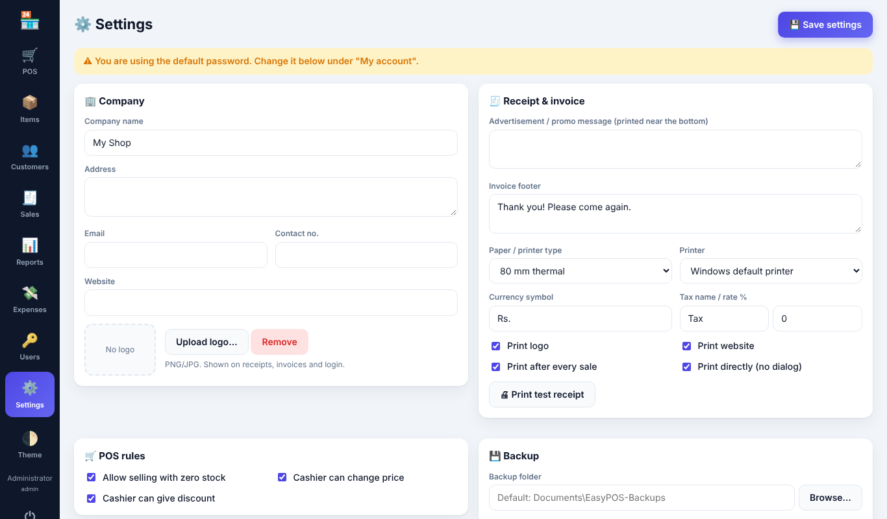
Settings පිටුව (administrator ට පමණි) විවෘත කර පහත දෑ පුරවන්න:
| ක්ෂේත්රය | කාර්යය |
|---|---|
| Company name, address, email, contact no., website | සෑම රිසිට්පතකම සහ ඉන්වොයිසියකම ඉහළින් මුද්රණය වේ. |
| Upload logo | PNG/JPG රූපයක් තෝරන්න. ස්වයංක්රීයව කුඩා කර රිසිට්පත්, ඉන්වොයිස් සහ මෙනුවේ පෙන්වයි. Remove මගින් ඉවත් කළ හැක. |
| Advertisement / promo message | කෙටි වෙළඳ දැන්වීමක් (උදා: “2ක් ගන්න 1ක් නොමිලේ – www.myshop.com”) සෑම බිල්පතකම පහළින් මුද්රණය වේ. |
| Invoice footer | අවසානයේ මුද්රණය වන පණිවිඩය, උදා: “ස්තූතියි! නැවත පැමිණෙන්න.” |
| Paper / printer type | 58 mm thermal, 80 mm thermal හෝ A4 ඉන්වොයිසිය. |
| Printer | නිශ්චිත මුද්රණ යන්ත්රයක් තෝරන්න, නැතහොත් Windows default printer භාවිතා කරන්න. |
| Currency symbol, tax name සහ % | බදු බිල්පතේ මුළු මුදලට එකතු වේ. බදු නැත්නම් 0 තබන්න. |
| Print after every sale / Print directly | සෑම විකිණීමකින් පසු ස්වයංක්රීයව මුද්රණය කිරීම; Windows dialog එක සහිතව හෝ රහිතව. |
| POS rules | තොග 0 වුවත් විකිණීමට ඉඩ දීම; කැෂියර්වරුන්ට මිල වෙනස් කිරීමට හෝ වට්ටම් දීමට ඉඩ දීම. |
රිසිට්පතේ පෙනුම බැලීමට Print test receipt ක්ලික් කරන්න. වෙනස්කම් කළ පසු සෑම විටම Save settings ක්ලික් කරන්න.
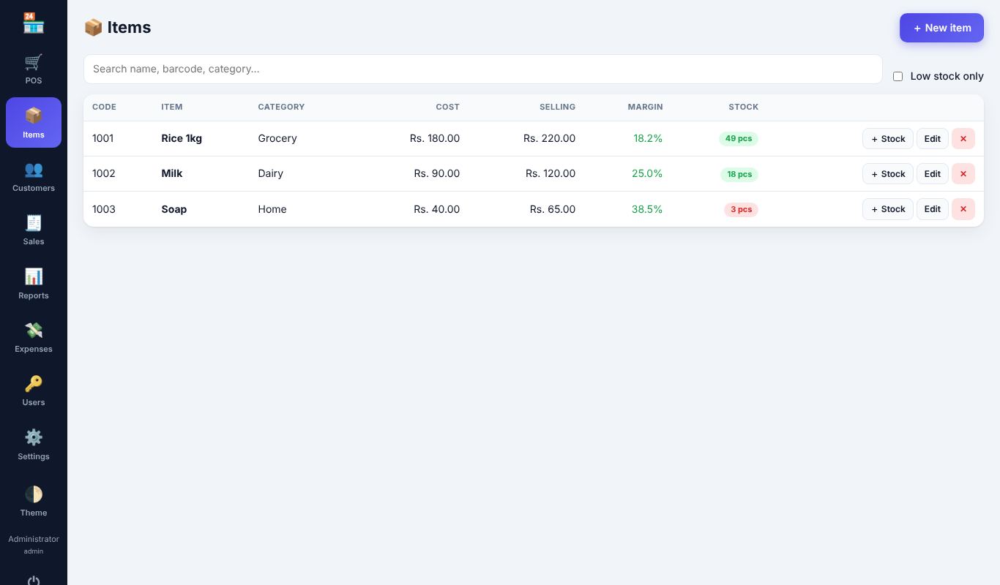
Items → ＋ New item වෙත යන්න.
| ක්ෂේත්රය | තේරුම |
|---|---|
| Barcode / code | භාණ්ඩයේ barcode එක මෙහි scan කරන්න. හිස්ව තැබුවහොත් කේතයක් ස්වයංක්රීයව සෑදේ. |
| Item name | අනිවාර්යයි. |
| Category | POS තිරයේ පෙරහන් (filter) බොත්තම් සඳහා භාවිතා වේ. |
| Cost price | සැපයුම්කරුට ගෙවන මිල. ලාභය ගණනය කිරීමට භාවිතා වේ. කැෂියර්වරුන්ට මෙය නොපෙනේ. |
| Selling price | ගනුදෙනුකරු ගෙවන මිල. එක් ඒකකයක ලාභය සහ ලාභ ප්රතිශතය (margin %) සජීවීව පෙන්වයි. |
| Stock on hand / Low-stock alert | වෙළඳසැලේ ඇති ප්රමාණය. අනතුරු ඇඟවීමේ මට්ටමට හෝ ඊට අඩු භාණ්ඩ රතු පාටින් පෙන්වයි. |
| Track stock | සේවා හෝ තොග ගණන් නොකරන භාණ්ඩ සඳහා ඉවත් කරන්න. |
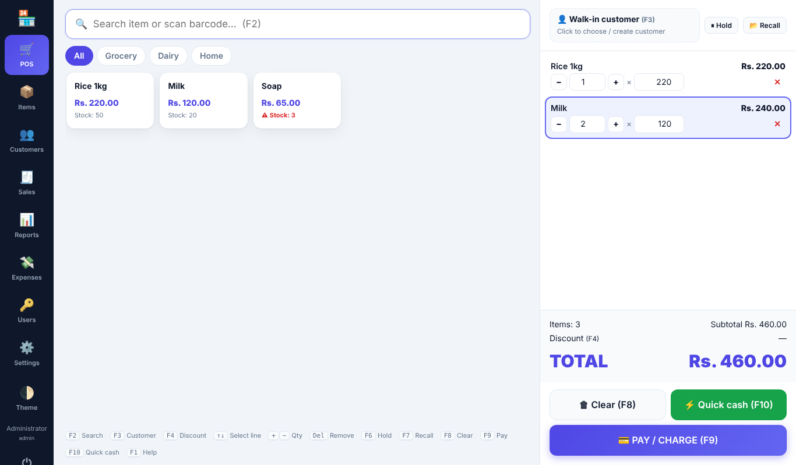
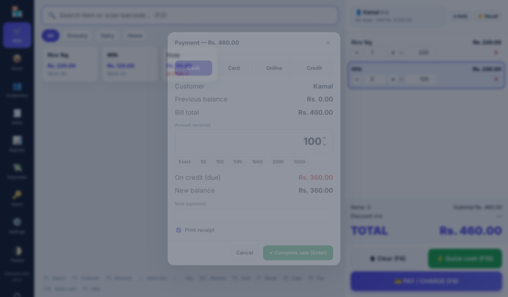
ගෙවීමේ කවුළුව: Cash / Card / Online / Credit තෝරන්න, ලැබුණු මුදල ටයිප් කරන්න (හෝ quick බොත්තම් භාවිතා කරන්න). ආපසු දිය යුතු ඉතිරි මුදල (change) හෝ ණයට යන මුදල පෙන්වයි. විකිණීම සම්පූර්ණ කිරීමට Enter ඔබන්න.
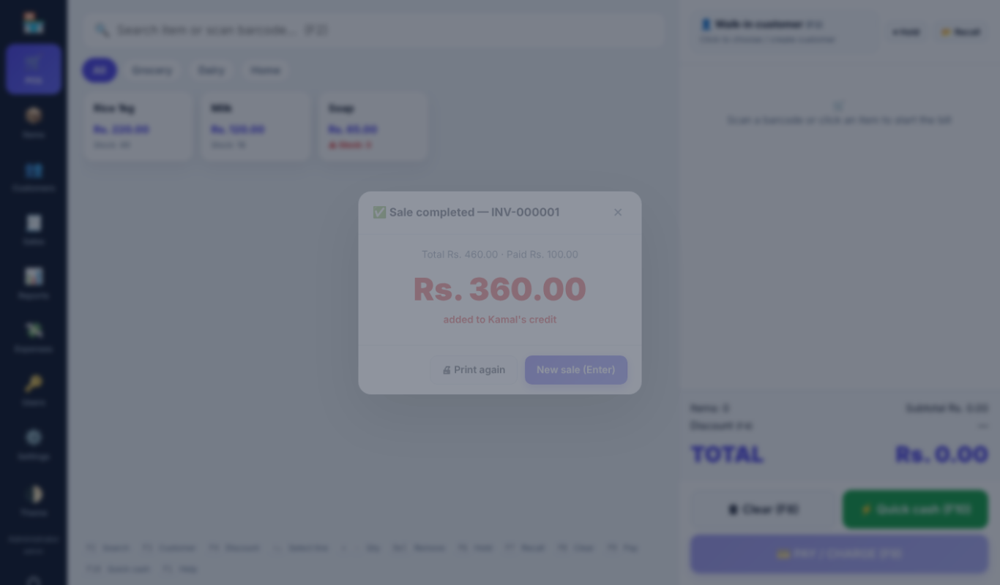
විකිණීමෙන් පසු ලොකු අකුරින් change මුදල පෙන්වන අතර (සක්රිය නම්) රිසිට්පත ස්වයංක්රීයව මුද්රණය වේ. ඊළඟ ගනුදෙනුකරු සඳහා Enter ඔබන්න.
| යතුර | කාර්යය |
|---|---|
| F1 | කෙටිමං උදව් පෙන්වයි |
| F2 | සෙවුම් / barcode කොටුවට යයි |
| සෙවුමේදී Enter | නිවැරදි barcode එකට ගැළපෙන භාණ්ඩය, නැතහොත් පළමු ප්රතිඵලය එකතු කරයි |
| F3 | ගනුදෙනුකරු තෝරන්න හෝ නව එකක් සාදන්න |
| F4 | බිල්පත් වට්ටම |
| ↑ ↓ | බිල්පතේ පේළියක් තෝරන්න |
| + / − | තෝරාගත් පේළියේ ප්රමාණය වැඩි/අඩු කරයි (සෙවුම් කොටුව හිස් විය යුතුය) |
| * | තෝරාගත් පේළියේ ප්රමාණය ටයිප් කරන්න |
| Delete | තෝරාගත් පේළිය ඉවත් කරයි |
| F5 | සුරකින ලද බිල්පතක් POS තිරයේම සංස්කරණය කරයි |
| F6 / F7 | බිල්පත Hold කරන්න / Hold කළ බිල්පත ආපසු ගන්න |
| F8 | බිල්පත හිස් කරන්න |
| F9 | ගෙවීම |
| F10 | Quick cash විකිණීම සහ මුද්රණය |
| Ctrl+P | අවසාන රිසිට්පත නැවත මුද්රණය කරයි |
| Esc | කවුළුවක් වසයි / සෙවුම මකයි |
| Alt+1…9 | පිටු මාරු කරයි |
| F11 | පූර්ණ තිරය |
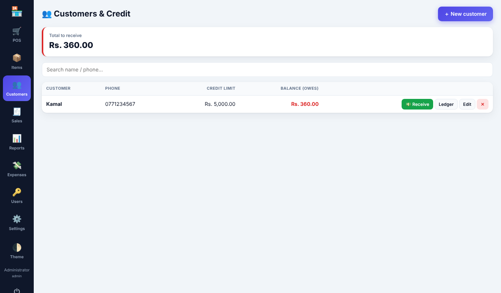
ගනුදෙනුකරුවෙකු සෑදීම: Customers → ＋ New customer හෝ POS තිරයේ F3 ඔබා ＋ New customer ක්ලික් කරන්න. අමතර ක්ෂේත්ර: credit limit (0 = සීමාවක් නැත) සහ opening balance (ගනුදෙනුකරු දැනටමත් ගෙවිය යුතු මුදල).
ණයට විකිණීම: ගනුදෙනුකරු තෝරා F9 ඔබා Credit (මුළු බිල්පතම ණයට) තෝරන්න, නැතහොත් අඩු මුදලක් ලැබුණු ලෙස ටයිප් කරන්න – ඉතිරිය ගනුදෙනුකරුගේ ශේෂයට එකතු වේ. ණය විකිණීමක් සඳහා ගනුදෙනුකරුවෙකු අවශ්යයි; credit limit එක ඉක්මවන්නේ නම් විකිණීම ප්රතික්ෂේප වේ.
මුදල් ලැබීම: Customers → 💵 Receive → මුදල සහ ගෙවීම් ක්රමය ඇතුළත් කරන්න. ශේෂය අඩු වන අතර ගෙවීම් රිසිට්පතක් මුද්රණය කළ හැක.
Ledger: සියලු ණය විකුණුම් සහ ගෙවීම් ධාවන ශේෂය (running balance) සමඟ පෙන්වයි. Customers පිටුවේ ඉහළින් ඔබට අයකර ගත යුතු මුළු මුදල පෙන්වයි.
Sales පිටුව දිනයන් පරාසයක ඉන්වොයිස් සෙවුම සමඟ පෙන්වයි. ඕනෑම ඉන්වොයිසියක් පෙරදසුන් කර නැවත මුද්රණය කිරීමට View / Print ක්ලික් කරන්න. Administrator ට විකිණීමක් Void කළ හැක: තොග ආපසු එකතු වන අතර ගනුදෙනුකරුගේ ණය ඉවත් වේ. Void කළ විකුණුම් VOID ලෙස පෙන්වන අතර වාර්තාවලින් බැහැර වේ.
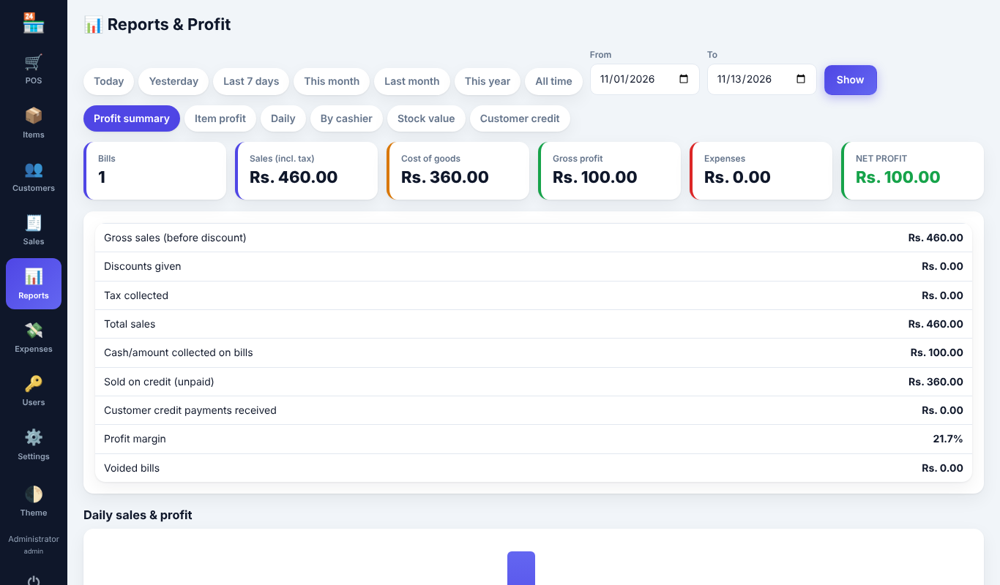
Expenses (කුලිය, විදුලිය, වැටුප්…) Expenses → ＋ Add expense හි ඇතුළත් කරන්න. ශුද්ධ ලාභය (net profit) ලබා ගැනීමට මේවා අඩු කරයි.
Reports (administrator ට පමණි) – ඉක්මන් පරාසයක් (Today, Yesterday, Last 7 days, This month…) හෝ අභිමත දින තෝරා, ඉන්පසු tab එකක් තෝරන්න:
| Tab | පෙන්වන දෑ |
|---|---|
| Profit summary | බිල්පත් ගණන, විකුණුම්, භාණ්ඩ පිරිවැය, gross profit, වියදම්, net profit, වට්ටම්, බදු, ණයට දුන් මුදල, ලැබුණු ගෙවීම්, ලාභ ප්රතිශතය සහ දෛනික ප්රස්තාරයක්. |
| Item profit | සෑම භාණ්ඩයකම ප්රමාණය, ආදායම, පිරිවැය සහ ලාභය – වැඩිම ලාභය මුලින්. |
| Daily | දිනපතා විකුණුම් සහ ලාභය. |
| By cashier | පරිශීලකයා අනුව විකුණුම් සහ ලාභය. |
| Stock value | පිරිවැය මිලට සහ විකුණුම් මිලට තොග වටිනාකම, අඩු තොග භාණ්ඩ. |
| Customer credit | මුදල් ගෙවීමට ඇති සියලු දෙනා සහ ඒ ප්රමාණ. |
ලාභය = විකුණුම් මිල − විකුණූ භාණ්ඩවල පිරිවැය මිල (වට්ටම්වලින් පසු; බදු ලාභයට ගණන් නොගනී). Export CSV මගින් Excel හි විවෘත කළ හැක.
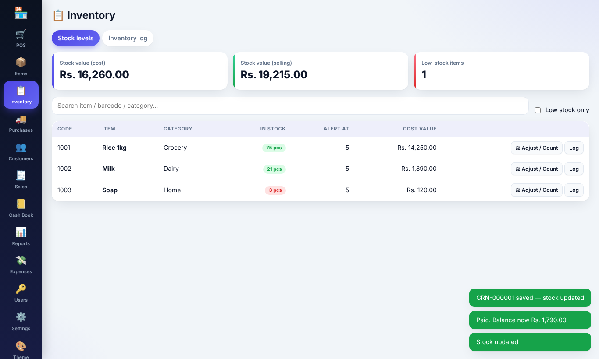
Inventory → Stock levels පිටුව සෑම භාණ්ඩයකම ප්රමාණය, අනතුරු ඇඟවීමේ මට්ටම සහ පිරිවැය/විකුණුම් මිලට තොග වටිනාකම පෙන්වයි. අඩු තොග භාණ්ඩ රතු පාටින් පෙන්වයි.
⚖ Adjust / Count මගින් තොග නිවැරදි කරයි: Set counted qty (තොග ගණන් කිරීම – ඔබ ගණන් කළ ප්රමාණය ටයිප් කරන්න), Add හෝ Remove. හේතුවක් (විනාශය, කල් ඉකුත්වීම, අහිමි වීම, ගනුදෙනුකරු ආපසු දීම…) සහ අවශ්ය නම් සටහනක් තෝරන්න. සුරැකීමට පෙර නව තොග ප්රමාණය කවුළුවේ පෙන්වයි.
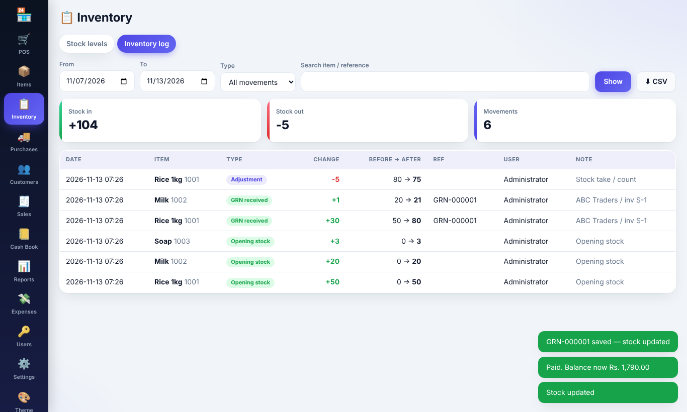
Inventory → Inventory log සෑම තොග චලනයක්ම වාර්තා කරයි: විකුණුම්, Void කළ විකුණුම්, GRN ලැබීම්, Void කළ GRN, ගැලපුම්, බිල්පත් සංස්කරණ සහ ආරම්භක තොග. සෑම පේළියකම වෙනස, තොග පෙර → පසු, යොමු අංකය, පරිශීලකයා සහ සටහන පෙන්වයි. දින, වර්ගය හෝ භාණ්ඩය අනුව පෙරහන් කර CSV වෙත ඉවත් කළ හැක. තොග පේළියක Log බොත්තම එම භාණ්ඩයේ ඉතිහාසය පමණක් විවෘත කරයි.
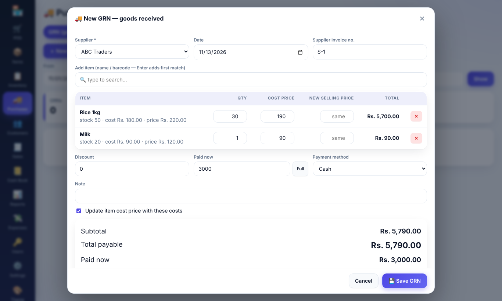
GRN එකක පේළි බැලීමට View ක්ලික් කරන්න. Administrators ට GRN එකක් Void කළ හැක – ලැබුණු තොග නැවත ඉවත් වේ.
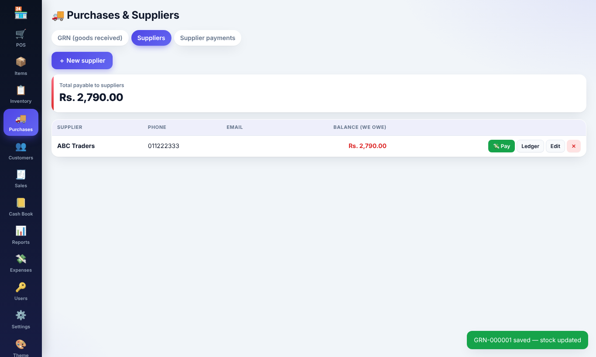
Suppliers tab එක සෑම සැපයුම්කරුවෙකුටම ඔබ ගෙවිය යුතු මුදල සහ මුළු ගෙවිය යුතු මුදල පෙන්වයි. ගෙවීමක් (cash, bank, cheque හෝ online) දිනයක් සහ cheque අංකය වැනි සටහනක් සමඟ වාර්තා කිරීමට 💸 Pay භාවිතා කරන්න. Ledger මගින් සියලු මිලදී ගැනීම් සහ ගෙවීම් ධාවන ශේෂය සමඟ පෙන්වයි. Supplier payments tab එක කාල පරිච්ඡේදයක සියලු ගෙවීම් ලැයිස්තුගත කරයි (වැරදි සටහනක් මකා දැමිය හැක). Cash ගෙවීම් මුදල් පොතේ (Cash Book) ස්වයංක්රීයව පෙන්වයි.
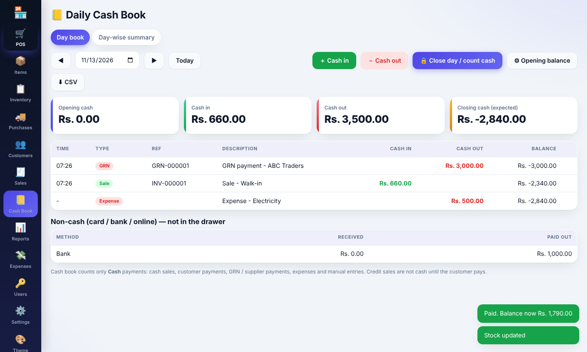
Cash Book මගින් එක් දිනයක මුදල් ලාච්චුව පෙන්වයි: ආරම්භක මුදල → ඇතුල් වූ මුදල → ඉවත් වූ මුදල → අවසාන මුදල. දිනය වෙනස් කිරීමට ◀ ▶ හෝ දින කොටුව භාවිතා කරන්න.
| මුදල් ඇතුල් වීම (IN) | මුදල් ඉවත් වීම (OUT) |
|---|---|
| මුදල් විකුණුම්, මුදලින් ලැබුණු ගනුදෙනුකරු ගෙවීම්, GRN ආපසු ගෙවීම්, අතින් ඇතුළත් කරන “Cash in” | GRN සඳහා මුදලින් ගෙවීම්, මුදලින් සැපයුම්කරු ගෙවීම්, මුදල් වියදම්, විකුණුම් ආපසු ගෙවීම් (void), අතින් ඇතුළත් කරන “Cash out” (බැංකු තැන්පතු, හිමිකරුගේ ආදායම් ආදිය) |
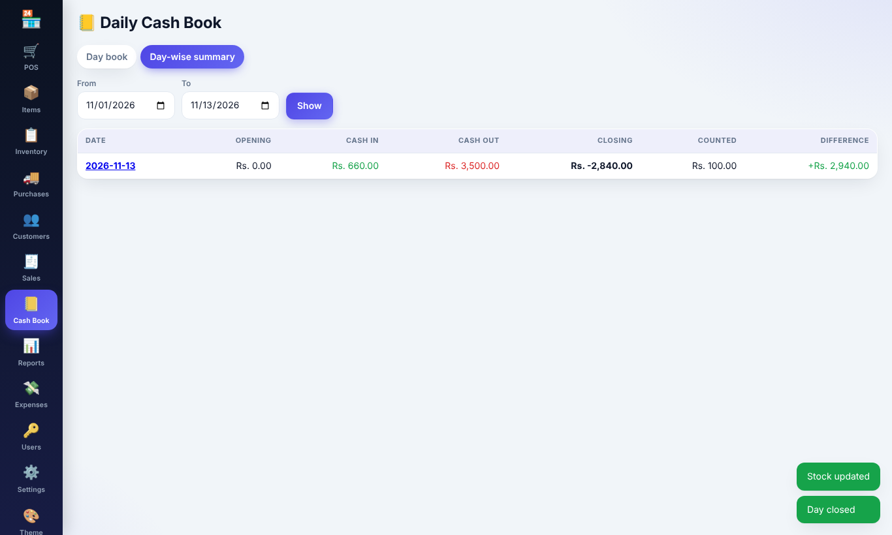
Day-wise summary tab එක සෑම දිනකම ආරම්භක, ඇතුල්, ඉවත්, අවසාන, ගණන් කළ මුදල සහ වෙනස පෙන්වයි. එම දිනයේ පොත විවෘත කිරීමට දිනයක් ක්ලික් කරන්න.
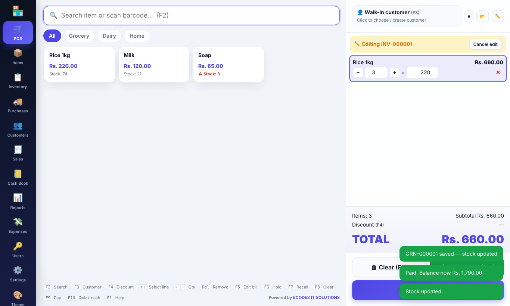
බිල්පතක් වැරදි ලෙස ඇතුළත් කළේ නම් POS තිරයෙන් පිටතට නොගොස් නිවැරදි කළ හැක:
ඉන්වොයිස් අංකය සහ මුල් දිනය නොවෙනස්ව පවතී; සංස්කරණය කළ බිල්පත් Sales ලැයිස්තුවේ EDITED ලෙස සලකුණු වේ. Administrators ට සැමවිටම බිල්පත් සංස්කරණය කළ හැක; කැෂියර්වරුන්ට Settings → Cashier can edit own saved bills සලකුණු කළහොත් පමණි. Void කළ බිල්පත් සංස්කරණය කළ නොහැක.
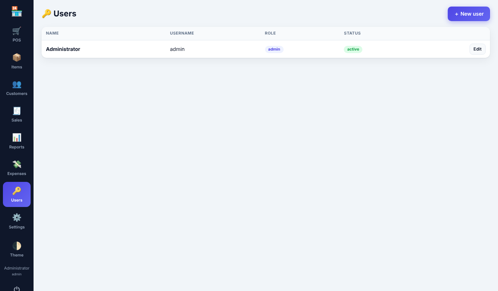
| භූමිකාව (Role) | කළ හැකි දෑ |
|---|---|
| Administrator | සියල්ල: භාණ්ඩ සහ cost price, inventory, GRN සහ සැපයුම්කරුවන්, මුදල් පොත, වාර්තා, වියදම්, පරිශීලකයන්, සැකසුම්, backup සහ විකුණුම් void කිරීම. |
| Cashier | POS, ගනුදෙනුකරුවන් සහ ණය ගෙවීම්, තමන්ගේ විකුණුම් බැලීම/නැවත මුද්රණය (අවසර ඇත්නම් සංස්කරණය). Cost price, ලාභය, මිලදී ගැනීම්, inventory log හෝ මුදල් පොත බැලිය නොහැක. |
Users → ＋ New user: නම, username, මුරපදය සහ role ඇතුළත් කරන්න. පරිශීලකයෙකු සංස්කරණය කරන විට මුරපදය හිස්ව තැබුවහොත් පැරණි මුරපදය පවතී. විකුණුම් සිදුකර ඇති පරිශීලකයෙකු මකනවා වෙනුවට අක්රිය කරයි. අවම වශයෙන් එක් සක්රිය administrator කෙනෙකු සැමවිටම සිටිය යුතුය.
Settings → Backup හි:
Documents\EasyPOS-Backups). USB drive එකක් හෝ OneDrive/Google Drive වැනි සමමුහුර්ත ෆෝල්ඩරයක් නිර්දේශිතයි.pos-backup-….json ගොනුව පිටපත් කරන්න.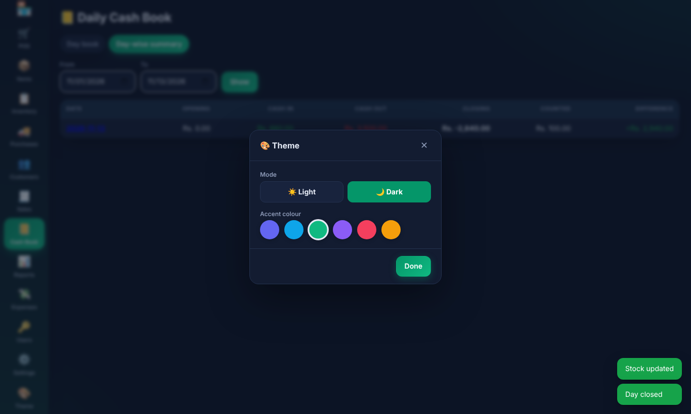
වම් මෙනුවේ පහළ ඇති 🎨 Theme ක්ලික් කර Light හෝ Dark ප්රකාරය සහ වර්ණ හයෙන් එකක් (Indigo, Ocean, Emerald, Violet, Rose, Amber) තෝරන්න. ඔබේ තේරීම මෙම පරිගණකයේ මතක තබා ගනී.
| ගැටලුව | විසඳුම |
|---|---|
| admin මුරපදය අමතක වුණා | වෙනත් administrator කෙනෙකුට Users හි එය reset කිරීමට ඉල්ලන්න. එවැන්නෙකු නොමැති නම්, මුරපදය දැන සිටි කාලයේ සාදන ලද පැරණි backup එකක් restore කරන්න. |
| කිසිවක් මුද්රණය නොවේ | Windows හි මුද්රණ යන්ත්රය ක්රියා කරන බව පරීක්ෂා කර, Settings හි එය තෝරා Print test receipt උත්සාහ කරන්න. Windows dialog එක සහ දෝෂ බැලීමට “Print directly” ඉවත් කරන්න. |
| Barcode එක හමු නොවේ | Items හි භාණ්ඩයේ code එක barcode එකට හරියටම ගැළපෙන බවත් භාණ්ඩය Active බවත් තහවුරු කරන්න. |
| “Credit limit exceeded” | ගනුදෙනුකරුගෙන් ගෙවීමක් ලබා ගන්න, නැතහොත් Customers → Edit හි සීමාව වැඩි කරන්න. |
| “Select a customer to sell on credit” | ගෙවීමට පෙර F3 ඔබා ගනුදෙනුකරුවෙකු තෝරන්න. |
| Settings හි backup අනතුරු ඇඟවීමක් | Backup ෆෝල්ඩරය ලබා ගත නොහැකි විය හැක (drive ඉවත් කර හෝ පිරී ඇත). වෙනත් ෆෝල්ඩරයක් තෝරන්න. |
Easy POS · Powered by ECODES IT SOLUTIONS · https://ecodes.lk